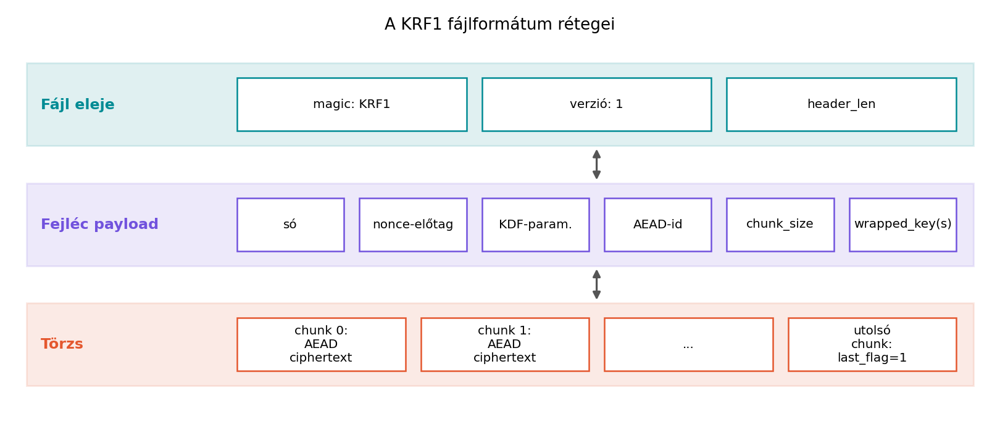

Tegyük fel, hogy egy érzékeny dokumentumot, adatbázis-mentést vagy privát kulcsot szeretnél feltölteni felhőbe, pendrive-ra vagy elküldeni egy ismerősnek. A lemeztitkosítás (például BitLocker, FileVault, LUKS) a gépeden lévő adatokat védi, amíg a gép ki van kapcsolva, de nem védi meg a fájlt akkor, amikor az elhagyja a gépet. Ilyenkor fájlszintű titkosításra van szükség.
A naiv megoldás az lenne, hogy fogunk egy blokkrejtjelet, valamilyen üzemmódot, és a fájlt egyszerűen végigfuttatjuk rajta. Ez azonban több szempontból is törékeny. Ha a támadó módosít egy bájtot, a visszafejtéskor egyszerűen rossz adatot kapunk, de ezt a folyamat nem feltétlenül veszi észre. Ha a támadó levágja a fájl végét, a program szépen visszafejti a maradékot, és mi azt hisszük, hogy a teljes dokumentumot látjuk. Ha a támadó átrendezi a darabokat, akkor a tartalom összekeveredik, de a dekódolás továbbra is „sikeres” lehet. A hitelesített titkosítás (AEAD) ezekre a támadásokra válasz: a rejtett szöveg mellé olyan címkét tesz, amely csak a kulcs birtokában ellenőrizhető, és amely a sorrendet, a teljességet és a módosítatlanságot is hitelesíti.
A másik gyakori hiba a jelszó kezelése. A felhasználói jelszót nem használhatjuk közvetlenül AEAD-kulcsként, mert az emberi jelszavak entrópiája alacsony, és a támadó offline szótártámadással próbálkozhat. Ezért memóriaigényes kulcsszármaztató függvényre van szükség: Argon2id vagy scrypt használatával a jelszóból csak nagy számítási és memóriaköltséggel lesz kulcs.
Ez a záróprojekt azt a feladatot adja, hogy tervezzünk meg és
valósítsunk meg egy parancssori fájltitkosító eszközt, amely a könyv
eddigi tanulságait egyetlen kerek konstrukcióba sűríti. A tervünk a
valóságban használt age eszközhöz és a HPKE szabványhoz
hasonló elveket követ, de oktatási célból a lehető legkisebb, jól
érthető implementációt adjuk.
Mielőtt a definíciókba ugranánk, nézzük meg, milyen szerkezetű lesz a titkosított fájl:

A kép azt mutatja, hogy a titkosított fájl három logikai részből áll.
A fájl fejléce tartalmazza a visszafejtéshez szükséges
nyilvános metaadatokat: a sót, a nonce-előtagot, a KDF-paramétereket, a
használt AEAD-azonosítót, a darabméretet és a file_key
becsomagolt (wrapped) változatát. A törzs ezután egy
vagy több darabra (chunkra) bontott AEAD rejtett szöveget tartalmaz. A
fejlécet minden darab AAD-jeként (additional
authenticated data) adjuk át az AEAD-nek, így a fejléc minden egyes
bájtja hitelesítve van anélkül, hogy titkosítani kellene. A törzs utolsó
darabja speciális nonce-jelölést kap, így a csonkolás észlelhető.
A projekt fenyegetési modellje a következő:
A biztonsági követelmények:
A formátum neve legyen KRF1 (az „oktatási fájltitkosító” rövidítése). A bájtokat big-endian sorrendben írjuk, hacsak mást nem mondunk. A fejlécet az alábbi mezők alkotják:
| Mező | Hossz (bájt) | Tartalom |
|---|---|---|
magic |
4 | b"KRF1" |
version |
1 | 0x01 |
header_len |
2 | a header_payload hossza big-endian |
header_payload |
header_len |
lásd alább |
chunk_0 |
változó | első AEAD rejtett szöveg (ciphertext + tag) |
chunk_1 |
változó | második AEAD rejtett szöveg |
| … | … | … |
chunk_last |
változó | utolsó AEAD rejtett szöveg, last_flag=1 |
A header_payload mezői:
| Mező | Hossz (bájt) | Tartalom |
|---|---|---|
salt |
16 | véletlen só a jelszó-KDF-hez |
nonce_prefix |
4 | véletlen nonce-előtag |
kdf_n |
4 | scrypt N paraméter (2**17) |
kdf_r |
4 | scrypt r paraméter (8) |
kdf_p |
4 | scrypt p paraméter (1) |
aead_id |
1 | 0x01 = AES-256-GCM, 0x02 =
ChaCha20-Poly1305 |
chunk_size |
4 | maximális nyílt szöveg hossz darabonként (pl.
65536) |
pw_wrap_len |
2 | a jelszavas wrap hossza (0, ha nincs) |
pw_wrap |
pw_wrap_len |
nonce(12) || AESGCM(file_key, aad=header_prefix) |
rcpt_wrap_len |
2 | az X25519-es wrap hossza (0, ha nincs) |
rcpt_wrap |
rcpt_wrap_len |
eph_pub(32) || nonce(12) || AESGCM(file_key, aad=header_prefix) |
Itt file_key egy 32 bájtos véletlen kulcs, amelyből a
tényleges chunk_key-et HKDF-fel származtatjuk. A
header_prefix a jelszavas és X25519-es wrap AAD-je: a
header_payload első 37 bájtja
(salt‖nonce_prefix‖kdf_n‖kdf_r‖kdf_p‖aead_id‖chunk_size),
tehát a magic, a version és a
header_len nélkül. A wrap így a fejléc legfontosabb
paramétereit is hitelesíti, még mielőtt a fájl törzsét
feldolgoznánk.
A törzs darabokra bontása a következő. A nyílt
szöveget chunk_size bájtos darabokra vágjuk; minden darabot
az AEAD-del titkosítunk és hitelesítünk. A rejtett szöveg hossza
darabonként len(plaintext_chunk) + 16 bájt (a 16 bájt tag
miatt). Az utolsó darab lehet rövidebb, és akkor is létrejön, ha a nyílt
szöveg hossza pontosan a darabméret többszöröse; ilyenkor az utolsó
darab üres, de last_flag=1 jelöléssel. Ennek oka a
streaming: a titkosító egy teli darab kiírásakor még nem tudja, jön-e
további adat, ezért a fájl végét mindig egy (akár üres)
last_flag=1 darab jelöli. Így az üres fájlnak is van
hitelesített vége, és a darabhatáron végzett csonkolás is lebukik.
A nagy fájlokat azért daraboljuk, mert a teljes fájl egyszeri AEAD titkosítása azt jelentené, hogy a teljes nyílt szöveget és rejtett szöveget a memóriában kell tartani. A streaming feldolgozásnál azonban a nonce-ok egyedisége és a sorrend hitelesítése külön figyelmet igényel.
A nonce-t a következőképpen építjük fel:
ahol:
nonce_prefix 4 bájt véletlen, a fejlécben tárolva;i 4 bájt, big-endian egész, a darab sorszáma 0-tól
kezdve;last_flag 4 bájt, értéke 1, ha az adott
darab az utolsó, egyébként 0.Az alábbi ábra az 1. feladat adataival
(nonce_prefix = 0x01020304, három darab) mutatja, hogy a
visszafejtő a pozícióból újraépíti a nonce-ot, ezért a módosított vagy
felcserélt darab AEAD-ellenőrzése bukik, a levágott fájlnál pedig az
utolsó elfogadott darab last_flag értéke 0.
A teljes nonce hossza 12 bájt, ami mind az AES-GCM, mind a
ChaCha20-Poly1305 esetén a szabványos nonce-méret. A
nonce_prefix biztosítja, hogy ugyanaz a kulcs két különböző
fájlban ne eredményezzen ugyanolyan nonce-t: a véletlen előtag nagy
valószínűséggel különbözik. A i számláló a darabok
sorrendjét hitelesíti: ha a támadó két darabot felcserél, akkor a nem
várt sorszámú nonce-szal próbáljuk visszafejteni a darabot, és az
AEAD-ellenőrzés meghiúsul. A last_flag pedig a
csonkolás elleni védelmet adja. Ha a támadó levágja a
fájl végét, a dekódoló az utolsó megmaradt darabot fogja utolsóként
olvasni, de annak a nonce-jában last_flag=0 szerepel. A
visszafejtő rutin ellenőrzi, hogy az utolsó feldolgozott darab
last_flag=1-gyel rendelkezik-e; ha nem, akkor a fájl
csonkolt, és hibát jelez.
A fejlécet minden darabnál AAD-ként adjuk át:
ahol
header_full = magic || version || header_len || header_payload.
Így a fejléc bármely bájtjának megváltoztatása az összes darab
AEAD-címkéjét érvénytelenné teszi. A header_full hossza a
fájl elején található header_len mezőből kiolvasható, ezért
a visszafejtés előtt pontosan beolvasható.
A jelszót soha nem használjuk közvetlenül AEAD-kulcsként. A jelszavas módban a következő lépéseket hajtjuk végre:
salt generálása
os.urandom(16) segítségével.file_key becsomagolására szolgál. A törzs
kulcsa ettől független, a file_key-ből származik (lásd a 4.
lépést):
.
Ez a kulcselkülönítés megakadályozza, hogy egy
esetleges hiba az egyik kulcs használatában a másik kulcsot is
veszélyeztesse, és lehetővé teszi, hogy a törzset több címzett (jelszó,
X25519) is visszafejthesse ugyanabból a file_key-ből.file_key-et. Ez lesz
a tényleges tartalomkulcs-forrás: belőle HKDF-fel
adódik.file_key-et a jelszó-KEK-kel AEAD-del becsomagoljuk,
és a pw_wrap mezőbe tesszük:
A nonce itt is véletlen 12 bájt.A visszafejtésnél a címzett ismeri a jelszót, ezért a
salt és a tárolt KDF-paraméterek segítségével kiszámítja
-t,
abból
-et,
majd a pw_wrap mezőből visszanyeri a
file_key-et. Ezután a file_key-ből HKDF-fel
-ot
származtat, és a darabokat visszafejti. Ha a jelszó hibás, a
pw_wrap AEAD-ellenőrzése meghiúsul, így a hiba már az első
lépésben kiderül, mielőtt bármilyen törzsfeldolgozásba kezdenénk.
Az opcionális X25519-címzett lehetővé teszi, hogy a fájlt ne csak jelszóval, hanem egy nyilvános kulccsal is megcímzessük. A megoldás a ElGamal-titkosítás, hibrid titkosítás és a KEM/DEM szerkezet alfejezetben tárgyalt KEM/DEM elvet követi, HPKE-stílusban.
Tegyük fel, hogy a feladó rendelkezik a címzett X25519 nyilvános
kulcsával, pk_R-rel. A fájlkulcs becsomagolása így
történik:
(eph_priv, eph_pub).info mezejébe belekeverni a két nyilvános kulcsot és a
kontextust is, ahogy a HPKE teszi; itt az oktatási egyszerűség kedvéért
a fenti info elegendő, de a kódban megjegyezzük a bővítési
lehetőséget.file_key-et a
kulccsal AEAD-del becsomagoljuk, és a rejtett szöveg elé tesszük az
efemer nyilvános kulcsot:
A visszafejtésnél a címzett a saját titkos kulcsával a
rcpt_wrap elején található eph_pub
felhasználásával kiszámítja ugyanazt a shared értéket, majd
ugyanazzal a HKDF-fel a
kulcsot, és visszanyeri a file_key-et. A konstrukció
post-compromise tulajdonságra nem törekszik, de az
efemer kulcs minden fájlnál új, ezért ugyanaz a címzett-publikus kulcs
sok fájlhoz használható anélkül, hogy a nonce-ok ütköznének.
Ha a fejlécben mind a jelszavas, mind az X25519-es wrap szerepel,
akkor a fájl mindkét módon visszafejthető: a file_key
ugyanaz, csak két különböző KEK-kel van becsomagolva.
A következő rövid kód a cryptography csomagot használja.
A jelszó-KDF-nél itt Scrypt-et használunk, mert ez oktatási
szempontból jól áttekinthető; a valós ajánlás az Argon2id, amelyet a
cryptography csomag újabb verziói is tartalmaznak
(cryptography.hazmat.primitives.kdf.argon2.Argon2id; a
46.0.5 verzióban importálása hibátlanul lefutott, de a verziót használat
előtt ellenőrizni kell). A KRF1 átállítható Argon2id-re (fejlécmezők:
memory_cost, iterations, lanes).
A kód a nonce-konstrukciót és az AEAD működését mutatja be, nem a teljes
streaming fájlkezelést.
# OKTATÁSI CÉLRA – NEM ÉLES HASZNÁLATRA
from cryptography.hazmat.primitives.ciphers.aead import AESGCM
from cryptography.hazmat.primitives.kdf.scrypt import Scrypt
from cryptography.hazmat.primitives.kdf.hkdf import HKDF
from cryptography.hazmat.primitives import hashes
import os
def derive_kek(password: str, salt: bytes) -> bytes:
master = Scrypt(salt=salt, length=32, n=2**17, r=8, p=1).derive(password.encode())
return HKDF(algorithm=hashes.SHA256(), length=32, salt=None,
info=b"KRF1-password-KEK").derive(master)
def chunk_key_from_file(file_key: bytes) -> bytes:
return HKDF(algorithm=hashes.SHA256(), length=32, salt=None,
info=b"KRF1-chunk-key").derive(file_key)
def make_nonce(prefix: bytes, counter: int, last: bool) -> bytes:
return prefix + counter.to_bytes(4, "big") + (1 if last else 0).to_bytes(4, "big")
def demo():
salt = os.urandom(16)
kek = derive_kek("correct horse battery staple", salt) # csak a file_key becsomagolására
file_key = os.urandom(32)
key = chunk_key_from_file(file_key) # a törzs kulcsa a file_key-ből jön
prefix = os.urandom(4)
aad = b"KRF1 header mock"
aesgcm = AESGCM(key)
plaintext = b"hello file encryption"
n = make_nonce(prefix, 0, True)
ct = aesgcm.encrypt(n, plaintext, aad)
pt = aesgcm.decrypt(n, ct, aad)
print("roundtrip:", pt == plaintext)
bad_ct = ct[:-1] + bytes([ct[-1] ^ 1])
try:
aesgcm.decrypt(n, bad_ct, aad)
except Exception:
print("tamper detected")
try:
aesgcm.decrypt(make_nonce(prefix, 1, True), ct, aad)
except Exception:
print("reorder/wrong-nonce detected")
demo()A kimenet (python3, cryptography 46.0.5 mellett ténylegesen lefuttatva):
roundtrip: True
tamper detected
reorder/wrong-nonce detectedA példa azt mutatja, hogy az AES-GCM a visszafejtéskor azonnal észleli a módosított rejtett szöveget és a rossz nonce-ot. A teljes fájltitkosítóban ugyanezt a mechanizmust kell darabonként alkalmazni, az előző szakaszban megadott nonce-építéssel.
A projekt tesztelése nem csupán kényelem, hanem a biztonság része. A Könyvtárválasztás, auditálás, tesztvektorok és fuzzing alfejezetben tanultak szerint a pozitív teszt mellett negatív teszteket is írunk. A megvalósított eszközhöz a következő minimális tesztkészlet tartozik:
InvalidTag vagy azzal egyenértékű hibát dob.last_flag=0 miatt hibát dob.A pythonos teszteléshez a pytest keretrendszer ajánlott,
de az egyszerű assert és pytest.raises is
elegendő.
age és a felhőfeltöltésA fájltitkosítási feladat nem iskolai absztrakció. A modern
age eszköz (https://age-encryption.org) kifejezetten ezt a
problémát oldja meg: jelszóból és/vagy X25519 nyilvános kulcsból
származtatott kulccsal, streaming AEAD titkosítással véd fájlokat. A
fejlesztők a formátumot úgy tervezték, hogy a fejléc hitelesített
legyen, a nonce-ok egyediek, és a csonkolás szembetűnővé váljon. A
gpg --symmetric régebbi változatai hosszú ideig csak gyenge
integritásvédelmet nyújtottak, és a jelszó-alapú kulcsszármaztatás sem
volt elég erős; az age ezekre a hiányosságokra született
válaszként.
A felhős tárolásban (például rclone crypt) szintén
hasonló elv jelenik meg: a fájlokat darabolják, minden darabot AEAD-del
védenek, és a nonce-ok tartalmazzák a darabszámot. Így a
felhőszolgáltató, amely a titkosított fájlokat tárolja, nem tudja
megváltoztatni a tartalmat anélkül, hogy a kliens észrevenné. A
jelszómenedzserek exportfájljai, a titkosított biztonsági mentések és a
banki átviteli fájlok mind hasonló tervezési döntéseket igényelnek.
Ez a záróprojekt tehát egy olyan eszköz oktatási változatát adja, amelyet élesben is használnak, csak a mi implementációnk nem éles használatra készült: a kód egyszerűsített, nincs alapos audit, és a hibakezelés sem fedi le az összes platformfüggő buktatót.
random modul használata
kulcsgenerálásra. A Python random modulja nem
kriptográfiai minőségű; só, nonce vagy kulcs előállítására kizárólag
os.urandom vagy secrets használható. A
fájlkulcs, a só és a nonce-előtag mind véletlen, ezért itt
os.urandom vagy secrets.token_bytes
használandó (a kódban os.urandom).
Nonce-újrahasználat. Ha a
nonce_prefix nem lenne véletlen, vagy ha a darabszámlálót
nem növelnénk, akkor két darab ugyanazzal a nonce-szal titkosítódna.
AES-GCM-nél ez katasztrofális: a két nyílt szöveg XOR-ja kiderül, és a
két címkéből a
hitelesítő alkulcs kiszámítható, amellyel a támadó tetszőleges üzenetet
hamisíthat (az AES-kulcs maga nem, de a titkosság és az integritás is
elvész). A mi tervünkben a prefix véletlen, a számláló monoton nő, és a
last_flag is a nonce része.
A fejléc hitelesítésének elmulasztása. Ha a
fejlécet nem adjuk AAD-ként az AEAD-hez, a támadó kicserélheti például a
chunk_size mezőt, és ezzel megzavarhatja a darabolást. A
fejléc minden bájtjának hitelesítettnek kell lennie.
Csonkolás figyelmen kívül hagyása. Ha a darabok
sorrendjét hitelesítjük, de nincs last_flag, a támadó
egyszerűen levágja a fájl végét, és a visszafejtés „sikeresen”
előállítja a megmaradt tartalmat. A last_flag a nonce-ban
garantálja, hogy a fájl végét nem lehet észrevétlenül
eltüntetni.
Jelszó közvetlen hash-elése. Egy gyors SHA-256-tal a jelszóból közvetlenül kulcsot készíteni szótártámadásra ad lehetőséget. Só és memóriaigényes KDF nélkül a jelszó alapú titkosítás nem nyújt megfelelő védelmet.
file_key-nek a jelszavas módban, és
miért jó, ha a jelszóhoz tartozó KEK különbözik a chunk kulcstól?last_flag a csonkolás ellen abban az
esetben, ha a nyílt szöveg hossza pontosan a darabméret
többszöröse?A válaszok a Megoldások elején találhatók.
1. feladat (A)
Írd le a KRF1 nonce felépítését, és add meg az első három darab
nonce-ját, ha nonce_prefix = 0x01020304, a darabszámozás
0-tól indul, és a fájl pontosan három darabból áll. A harmadik darab az
utolsó.
2. feladat (A)
Egy 10 MiB méretű fájlt 64 KiB-os darabmérettel titkosítunk. Hány teli
darab, és összesen hány AEAD-darab keletkezik? Mekkora az utolsó darab
nyílt szövege, ha a fájl mérete pontosan osztható a darabmérettel? Miért
van szükség ilyenkor is egy üres utolsó darabra?
3. feladat (B)
Adott a jelszavas KRF1 titkosító egy hibás változata, amely a nonce-ot
nonce_prefix || i formában képzi, tehát nincs
last_flag. Mutass egy konkrét csonkolásos támadást: mit
csinál a támadó, és miért lesz a visszafejtés sikeres? Milyen
módosítással lehetne a hibát javítani?
4. feladat (B)
A fájlformátumban a chunk_size mezőt a fejlécben tároljuk.
Mi történik, ha a támadó megváltoztatja ezt a mezőt, és a fejléc nincs
AAD-ként hitelesítve? Miért nem működik ugyanez a támadás, ha a fejléc
AAD-ként szerepel?
5. feladat (C)
Fogalmazd meg informálisan, de pontosan, milyen biztonsági
tulajdonságokból következik, hogy a KRF1 fájl visszafejtése csak akkor
sikeres, ha a fájl a titkosításkori állapotában van (a bájtok
sorrendjét, a fejlécet és a hosszt is beleértve). Hivatkozz az AEAD
rejtettszöveg-integritására (INT-CTXT) és a nonce-ok egyediségére.
6. feladat (D)
Valósítsd meg a jelszavas KRF1 titkosítást és visszafejtést egyetlen
fájlra, a cryptography csomag segítségével. A megoldásban a
file_key-et a jelszó-KEK-kel becsomagolva tárold a
fejlécben, a törzset pedig darabolva AEAD-del titkosítsd. Teszteld hibás
jelszó, módosított bájt és csonkolás esetén. A kód legyen futtatható, és
írd ki az egyes tesztek eredményét.
nonce_prefix (4 bájt, véletlen, azonos
kulcs mellett az egyediséget biztosítja), counter (4 bájt,
a darab sorrendjét hitelesíti), last_flag (4 bájt, az
utolsó darabot jelzi a csonkolás ellen). A nonce komponensei a darab
AAD-jével együtt a sorrendet, a teljességet és a fejlécet
hitelesítik.file_key a tényleges tartalomkulcs; a jelszóhoz
tartozó KEK csak a file_key becsomagolására szolgál. A
kétszintű kulcs miatt a jelszócsere elvben csak a wrap cseréjét
igényelné; a KRF1-ben azonban a teljes fejléc (benne a wrap) a darabok
AAD-je, ezért jelszócserénél (vagy új címzett felvételénél) a fejléc
megváltozik, és a törzset is újra kell titkosítani. Ha ezt el akarnánk
kerülni, a darabok AAD-jébe csak a wrap-független
header_prefix-et tennénk, a wrapeket pedig a saját AAD-jük
védené.last_flag=1 záró darabot. Így darabhatáron levágva a fájlt
az utolsó megmaradt darab last_flag=0 nonce-szal készült, a
visszafejtő pedig last_flag=1-et vár, tehát hibát jelez.
(Előretekintő olvasással a teli utolsó darabot is lehetne jelölni; az
age például így tesz – ellenőrzendő.)A nonce 12 bájt: nonce_prefix || counter || last_flag.
nonce_prefix = 0x01020304, a counter 4 bájt
big-endian, a last_flag 4 bájt. A három darab nonce-ja:
01 02 03 04 || 00 00 00 00 || 00 00 00 0001 02 03 04 || 00 00 00 01 || 00 00 00 0001 02 03 04 || 00 00 00 02 || 00 00 00 0110 MiB =
bájt. A darabméret
bájt. A darabok száma ceil(10485760 / 65536) = 160. Mivel
pontosan osztható, a nyílt szöveg 160 darabra osztható, az utolsó nyílt
szövegdarab is 65 536 bájt. Ennek ellenére szükség van egy extra üres,
last_flag=1-gyel jelölt darabra: a streaming titkosító a
teli darab kiírásakor még nem tudja, hogy az az utolsó, és az
üres/darabhatáros fájlnak is hitelesített véget kell kapnia. Így a teli
darabok száma 160, az AEAD-darabok száma 161, ahol a 161. darab
plaintext hossza 0.
A hibás nonce nonce_prefix || i alakú. A támadó
egyszerűen levágja az utolsó darabot (vagy annak egy részét). A
visszafejtés a megmaradt darabokat a fájl végeként kezeli, mert nincs
semmilyen jelzés, hogy az utolsó darabnak last_flag=1-nek
kellene lennie. A nonce-ok mind érvényesek, a sorrend a maradékban
helyes, ezért a visszafejtés hibátlanul lefut, és a támadó el tudja
rejteni a fájl végét. A javítás: a nonce-hoz hozzá kell adni egy
last_flag mezőt, és a visszafejtőnek ellenőriznie kell,
hogy az utolsó feldolgozott darab last_flag=1-gyel
rendelkezik.
Ha a chunk_size mező nincs hitelesítve, a támadó
átírhatja például 65 536-ról 1-re. Ekkor a visszafejtő a törzset tévesen
1 bájtos darabokra próbálja bontani, ami nem egyezik a titkosítás során
használt darabolással, így a visszafejtés valószínűleg hibát dob, vagy a
támadó esetleg más hibajelenséget idéz elő. Ha a fejléc AAD-ként
szerepel, a chunk_size megváltoztatása érvényteleníti az
összes darab AEAD-címkéjét, így a támadás észlelhető.
Az AEAD INT-CTXT-biztonsága (rejtettszöveg-integritása) szerint a
kulcs ismerete nélkül a támadó nem tud olyan (nonce, AAD, rejtett
szöveg) hármast előállítani, amelyet a visszafejtés elfogad, és amely
nem pontosan egy korábban titkosított hármas. Mivel a nonce a pozíciót
és a záró jelzőt, az AAD a fejlécet kódolja, és a K_chunk
fájlonként friss (a file_key fájlonként véletlen, így egy
darabot nem lehet más fájlba átültetni), a visszafejtő pozíciónként csak
az eredeti darabot fogadhatja el; az ellenőrzés, hogy az utolsó
elfogadott darab last_flag=1, és utána nincs adat, a hosszt
rögzíti. A titkosságot (IND-CPA/IND-CCA) ettől külön a 39.1.3 1.
követelménye adja. A nonce-ok egyedisége (véletlen előtag + számláló)
pedig azt biztosítja, hogy az AEAD biztonsági garanciái egyáltalán
érvényesek.
Az alábbi kód egyetlen fájlra valósítja meg a jelszavas KRF1 titkosítást és visszafejtést. A kód futtatható, de oktatási célú, nem éles használatra.
# OKTATÁSI CÉLRA – NEM ÉLES HASZNÁLATRA
import os
import struct
from cryptography.hazmat.primitives.ciphers.aead import AESGCM
from cryptography.hazmat.primitives.kdf.scrypt import Scrypt
from cryptography.hazmat.primitives.kdf.hkdf import HKDF
from cryptography.hazmat.primitives import hashes
MAGIC, VERSION, AEAD_ID = b"KRF1", 1, 1
CHUNK_SIZE = 64 * 1024
N, R, P = 2**17, 8, 1
TAG = 16
PREFIX_FMT = ">16s4sIIIBI" # salt, nonce_prefix, N, r, p, aead_id, chunk_size
PREFIX_LEN = struct.calcsize(PREFIX_FMT) # 37
def hkdf(key: bytes, info: bytes) -> bytes:
return HKDF(algorithm=hashes.SHA256(), length=32, salt=None, info=info).derive(key)
def scrypt_kek(password: bytes, salt: bytes, n=N, r=R, p=P) -> bytes:
master = Scrypt(salt=salt, length=32, n=n, r=r, p=p).derive(password)
return hkdf(master, b"KRF1-password-KEK")
def make_nonce(prefix: bytes, counter: int, last: bool) -> bytes:
return prefix + counter.to_bytes(4, "big") + (1 if last else 0).to_bytes(4, "big")
def encrypt_file(password: bytes, plaintext: bytes) -> bytes:
salt, prefix, file_key = os.urandom(16), os.urandom(4), os.urandom(32)
header_prefix = struct.pack(PREFIX_FMT, salt, prefix, N, R, P, AEAD_ID, CHUNK_SIZE)
pw_nonce = os.urandom(12)
pw_wrap = pw_nonce + AESGCM(scrypt_kek(password, salt)).encrypt(pw_nonce, file_key, header_prefix)
payload = header_prefix + struct.pack(">H", len(pw_wrap)) + pw_wrap + struct.pack(">H", 0)
header_full = MAGIC + bytes([VERSION]) + struct.pack(">H", len(payload)) + payload
aead = AESGCM(hkdf(file_key, b"KRF1-chunk-key"))
out, off, counter = bytearray(header_full), 0, 0
while True: # a záró (akár üres) darab mindig last=1
chunk = plaintext[off:off + CHUNK_SIZE]
off += len(chunk)
last = len(chunk) < CHUNK_SIZE
out += aead.encrypt(make_nonce(prefix, counter, last), chunk, header_full)
counter += 1
if last:
return bytes(out)
def decrypt_file(password: bytes, data: bytes) -> bytes:
if data[:4] != MAGIC or data[4] != VERSION:
raise ValueError("ismeretlen formátum")
(header_len,) = struct.unpack(">H", data[5:7])
header_full = data[:7 + header_len]
payload = header_full[7:]
salt, prefix, n, r, p, aead_id, chunk_size = struct.unpack(PREFIX_FMT, payload[:PREFIX_LEN])
header_prefix = payload[:PREFIX_LEN]
if aead_id != AEAD_ID or n > 2**20: # nem megbízható mezők korlátozása
raise ValueError("nem támogatott paraméter")
(wl,) = struct.unpack(">H", payload[PREFIX_LEN:PREFIX_LEN + 2])
pw_wrap = payload[PREFIX_LEN + 2:PREFIX_LEN + 2 + wl]
kek = scrypt_kek(password, salt, n, r, p)
file_key = AESGCM(kek).decrypt(pw_wrap[:12], pw_wrap[12:], header_prefix) # hibás jelszó: InvalidTag
aead = AESGCM(hkdf(file_key, b"KRF1-chunk-key"))
body, out, pos, counter = data[7 + header_len:], bytearray(), 0, 0
while True:
ct = body[pos:pos + chunk_size + TAG]
pos += len(ct)
last = pos == len(body) # az utolsó beolvasott darab az utolsó
out += aead.decrypt(make_nonce(prefix, counter, last), ct, header_full)
counter += 1
if last:
return bytes(out)
def demo():
pw, msg = b"correct horse battery staple", os.urandom(100_000)
blob = encrypt_file(pw, msg)
print("roundtrip:", decrypt_file(pw, blob) == msg)
for name, f in [("wrong password", lambda: decrypt_file(b"x", blob)),
("tampered", lambda: decrypt_file(pw, blob[:-20] + bytes([blob[-20] ^ 1]) + blob[-19:])),
("truncated", lambda: decrypt_file(pw, blob[:-(len(msg) % CHUNK_SIZE + TAG)]))]:
try:
f(); print(name + ": ACCEPTED (hiba!)")
except Exception:
print(name + ": rejected")
if __name__ == "__main__":
demo()A kód futtatásának kimenete (python3, cryptography 46.0.5; a nyílt szöveg 100 000 véletlen bájt, a három negatív teszt a jelszót, egy bájtot, illetve a záró darabot érinti):
roundtrip: True
wrong password: rejected
tampered: rejected
truncated: rejectedMagyarázat. A header_prefix a
header_payload első 37 bájtja, a header_full a
teljes fejléc. A pw_wrap a file_key-et a
jelszó-KEK-kel csomagolja header_prefix AAD-vel, így hibás
jelszónál már ez a lépés elbukik. A törzs kulcsa a
file_key-ből származik, a nonce-ot nem tároljuk (a prefix a
fejlécben, a számláló és a jelző a pozícióból adódik), a darabok AAD-je
a header_full. A titkosító mindig ír záró darabot
last_flag=1-gyel (üres nyílt szövegnél is), a visszafejtő
pedig a fájl végén álló darabot várja last_flag=1-gyel.
A projekt egy biztonságos, streaming fájltitkosító tervezését és
oktatási implementációját mutatta be. A KRF1 formátum fejléce
tartalmazza a sót, a nonce-előtagot, a KDF-paramétereket, az
AEAD-azonosítót, a darabméretet és a file_key becsomagolt
változatát. A fejléc minden darab AAD-jeként hitelesített. A jelszóból
scrypt-tel mesterkulcsot, abból HKDF-fel a KEK-et származtatjuk; a
file_key-et a jelszó-KEK és/vagy X25519-alapú KEK
csomagolja, a chunk kulcs pedig a file_key-ből származik
HKDF-fel. A darabok AEAD rejtett szövegek, nonce-uk
prefix || counter || last_flag alakú, ami biztosítja a
sorrend hitelesítését és a csonkolás észlelését. A tesztek a hibás
jelszó, a módosított bájt, a csonkolás és az átrendezés eseteit fedik
le. Továbbvitt eredmény. A fenyegetésmodell-felállítás,
a fájlformátum-tervezés, a kulcselkülönítés, a nonce-kezelés és a
negatív tesztek módszertana közvetlenül újrahasznosítható a 2. projekt: saját hitelesített kulcscsere-protokoll
tervezése és elemzése, a 3. projekt:
kriptanalízis-labor játékimplementációk ellen és a 4. projekt: posztkvantum-migrációs terv és hibrid
kulcscsere során.
A konstrukció a klasszikus KEM/DEM elvet és a hitelesített titkosítás
tervezési elveit követi, amelyeket a ElGamal-titkosítás, hibrid titkosítás és a KEM/DEM
szerkezet és a Hitelesített
titkosítás alfejezetekben tárgyaltunk. A cryptography
csomag API-jai a fejezet írásakor érvényes dokumentációból származnak,
de a verziófrissítések miatt használat előtt ellenőrizni kell. A scrypt
paraméterek és a 64 KiB darabméret oktatási választás; a valós ajánlás
az Argon2id és az aktuális OWASP/NIST irányelvek szerint változhat. A
KRF1 formátum oktatási célú, nem kompatibilis az age vagy
más eszközökkel.